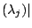

Recent work on power system stability, controller design and electromagnetic transients has used several advanced model reduction techniques. Although these techniques, such as balanced truncation, produce good results, they impose high computational costs and hence are only applicable to moderately sized systems. Modal model reduction is a cost-effective alternative for large-scale systems, when only a fraction of the system pole spectrum is controllable-observable for the transfer function of interest. Modal reduction produces transfer function modal equivalents from the knowledge of the dominant poles and their corresponding residues. In this talk a specialized eigenvalue method will be presented that computes the most dominant poles and corresponding residues of a SISO transfer function.
The transfer function of a single input single output (SISO) system is defined as
Let the eigenvalues (poles) of  and the
corresponding right and left eigenvectors be given by the
triplets
,
and let the right and
left eigenvectors be scaled so that
.
It is
assumed that
for .
The transfer function in equation (1)
can be expressed as a
sum of residues over first order poles:
and the
corresponding right and left eigenvectors be given by the
triplets
,
and let the right and
left eigenvectors be scaled so that
.
It is
assumed that
for .
The transfer function in equation (1)
can be expressed as a
sum of residues over first order poles:
A dominant pole is a pole that corresponds to a residue with large magnitude Re , i.e., a pole that is well observable and controllable in the transfer function. This can also be observed from the corresponding Bode magnitude plot of , where peaks occur at frequencies close to the imaginary parts of the dominant poles of . An approximation of that consists of terms with Re above some value, determines the effective transfer function behavior and is called the transfer function modal equivalent:
Given a SISO linear, time invariant, dynamical system , compute dominant poles and the corresponding right and left eigenvectors and .
The algorithm to be presented, called Subspace Accelerated Dominant Pole Algorithm (SADPA) [1], combines a Newton algorithm [2] with subspace acceleration, a clever selection strategy and deflation to efficiently compute the dominant poles and corresponding residues. It can easily be extended to handle MIMO systems as well [3]. The performance of the algorithm will be illustrated by numerical examples of large scale power systems.
[1] J. Rommes, N. Martins, Efficient computation of transfer function dominant poles using subspace acceleration, UU Preprint (2005) 1340.
[2] N. Martins, L.T.G. Lima, H.J.C.P. Pinto, Computing dominant poles of power system transfer functions, IEEE Trans. Power Syst. 11(1) (1996) 162-170.
[3] J. Rommes, N. Martins, Efficient computation of multivariable transfer function dominant poles using subspace acceleration, UU Preprint (2006) 1344.